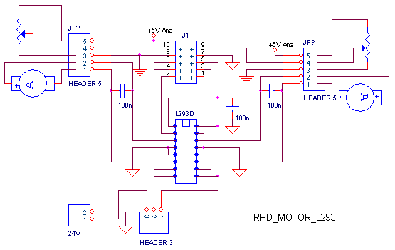
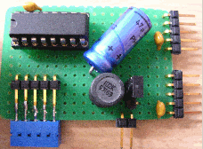
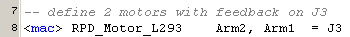
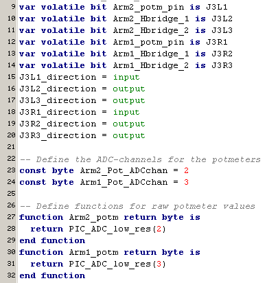

july 2005
RPD Motor L293
Device with dual full H-bridge and dual feedback, based on the L293D.
Allowable current 1A per driver, 2A peak.
Motor voltage can be selected form digital +5V or form 12/24V.

In series with pin2 of header 3 there should be a 1mH / 47uF network.

JALcc macro call

JALcc use
JALcc macro expansion
